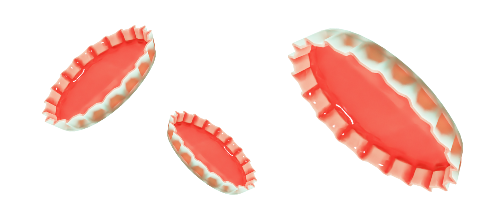

Статьи
Как выбросывать крышки?
Жестяные крышки играют важную роль в осознанном потреблении благодаря своим экологическим свойствам. Они являются перерабатываемыми и могут быть повторно использованы, что способствует сокращению отходов. Кроме того, жестяные крышки обеспечивают герметичность упаковки, сохраняя свежесть и качество продуктов, таких как консервы или напитки. Использование жестяных крышек также способствует сохранению пищевых продуктов без необходимости использования пластиковых или одноразовых упаковок.
Жестяные крышки можно перерабатывать бесконечное количество раз без потери качества материала, что делает их одним из самых устойчивых и экологически дружелюбных вариантов упаковки.
 Крышки от бутылок
Крышки от бутылокЖестяные крышки — это неизбежный элемент упаковки при покупке консервов и другой продукции. Однако, после использования крышки могут стать источником негативного влияния на окружающую среду.
 Негативные свойстваБольшое количество крышек попадает на свалки и не разлагается в течение десятилетий, что приводит к загрязнению окружающей среды.
Что с ними делать?Крышки можно переплавить и использовать в качестве сырья для производства новых крышек.
Крышки можно сдать на специальные пункты переработки, где они будут утилизированы безопасным для окружающей среды способом.
Крышки можно использовать в качестве материала для создания различных хобби-изделий, например, декоративных предметов, кукол и т.д.